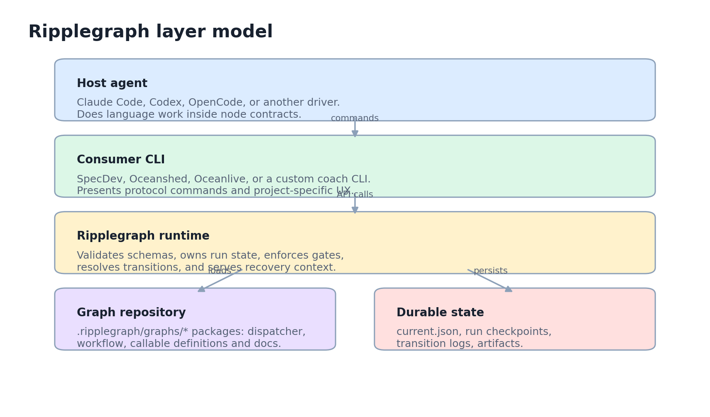
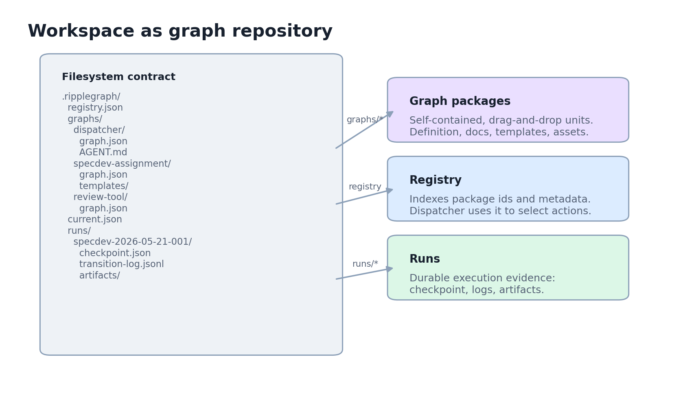
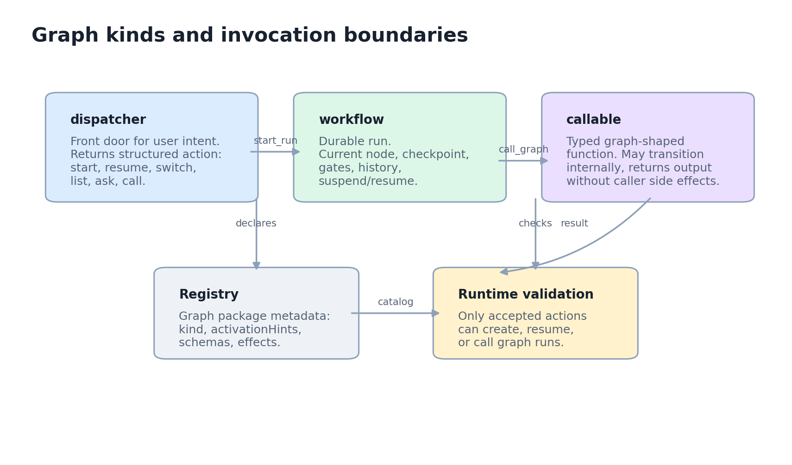
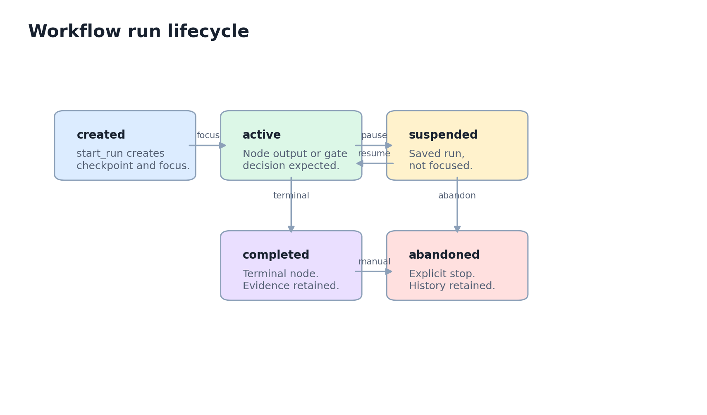
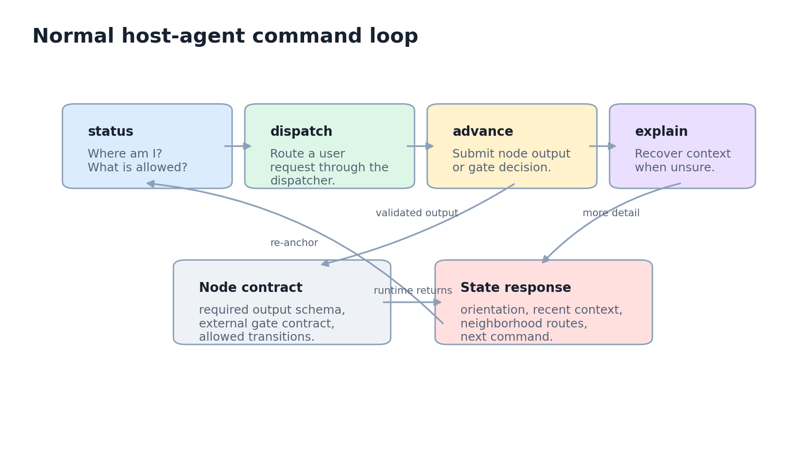

Ripplegraph is a host-agent-driven coach runtime. It gives agent-facing CLIs a portable graph backbone:
deterministic flow, durable state, explicit gates, typed node contracts, and recovery context for long agent sessions.
Architecture noteGenerated diagrams in assets/Script: generate_architecture_diagrams.pyStatus: registry, dispatcher, callable runtime, and effect enforcement implemented
1. Executive Summary
Ripplegraph separates control flow from language work. The host agent, such as Claude Code, Codex, OpenCode, or
another CLI driver, performs the actual reasoning and content generation. Ripplegraph owns the deterministic
skeleton: graph position, state persistence, transitions, external gates, output validation, and re-anchoring
context.
The redesign positions Ripplegraph as the backbone for coach CLIs rather than a single workflow runner. A
workspace can act as a graph repository with dispatcher graphs, durable workflow graphs, and callable graph-shaped
tools. This is similar in purpose to a skills or plugin system, but the interface is stricter: graph packages
declare activation hints, schemas, effects, and invocation boundaries.
Core rule: the LLM may produce content inside a contract, but it should not be trusted with unvalidated flow
control. If a design lets the LLM freely choose transitions, it should be moved behind a dispatcher action,
schema, or gate.

The runtime sits below host-agent-facing CLIs and above graph packages plus filesystem state.
2. Responsibility Split
Layer
Owns
Does not own
Host agent
Reading project context, drafting node outputs, interpreting user intent, using local tools.
Unchecked graph selection, direct state mutation, bypassing gates.
Mutating runtime state outside the declared graph contract.
3. Workspace Repository Model
The workspace layout treats .ripplegraph/ as an installed graph repository and runtime state
directory. Graph packages can be dropped into the workspace, validated, registered, and exposed to the dispatcher
catalog. Runs and callable calls remain durable evidence.

Graph packages and run state live side by side, but they serve different purposes.
The compact workflow.json format remains the executable workflow runtime for demos, tests, and direct
workflow starts. Registered package folders are live for validation, registry catalog, dispatcher action targets,
and callable execution. Package-folder workflow execution is the remaining runtime gap.
4. Graph Kinds

Each graph kind has a different invocation boundary and persistence contract.
Dispatcher
A dispatcher is the front door for user intent. It reads a request and workspace context, then emits a
structured action such as start_run, resume_run, switch_run,
list_runs, ask_user, or call_graph.
Workflow
A workflow is a durable user-visible run. It has a current node, checkpoint, outputs, gate decisions,
transition log, artifacts, status, and suspend/resume behavior.
Callable
A callable is a typed graph-shaped function. It may use internal transitions, but from the caller perspective
it returns a value and audit record without mutating caller workflow state.
5. Graph Package Schema
The package metadata is the public framework API. Demos are examples; schema fields are the contract that lets
other CLIs adapt Ripplegraph cleanly.
Field
Purpose
Runtime meaning
id
Stable graph package identity.
Used by registry, dispatch actions, run root graph, and logs.
kind
dispatcher, workflow, or callable.
Determines invocation and persistence rules.
activationHints
Soft natural-language hints for dispatcher selection.
Useful for routing, but not an authorization boundary.
inputSchema and outputSchema
Typed graph-level contract.
Lets callers validate inputs and returned outputs.
effects
Declared side effect capabilities, such as file writes or network.
Enforced at workflow start and callable start boundaries with explicit runtime policy.
entry and nodes
Graph structure.
Defines starting node, node contracts, gates, and transition rules.
{
"id": "specdev-assignment",
"kind": "workflow",
"version": "0.1.0",
"title": "SpecDev Assignment",
"description": "Run a structured assignment from brainstorm through implementation.",
"activationHints": ["start a specdev assignment", "plan and implement a feature"],
"inputSchema": {},
"outputSchema": {},
"effects": ["read_repo", "write_files", "run_tests"],
"entry": "brainstorm",
"nodes": {}
}
6. Dispatch Model
Direct graph selection is useful for testing, but normal use should go through dispatch. The host
agent submits the user request, the dispatcher returns a structured action, and Ripplegraph validates that action
against the registry before changing focus or state.
ripplegraph dispatch --request "review and clean up this codebase"
{
"action": "start_run",
"graphId": "specdev-assignment",
"runId": "specdev-2026-05-21-001",
"input": {
"request": "review and clean up this codebase"
},
"reason": "User requested a structured cleanup assignment."
}
This keeps routing flexible without giving the host agent unbounded authority. activationHints help
the dispatcher decide, while registry validation and effect policy decide what is actually allowed. Read-only
dispatcher requests expose the catalog without grants; executable start_run and
call_graph actions must satisfy graph kind, registry, and effect checks before state changes.
7. Run Lifecycle and Persistence

Runs are durable by default. Focus can move without deleting evidence.
State file
Contents
current.json
The currently focused run id, or no focus.
checkpoint.json
Root graph, current node, outputs, gate decisions, timestamps, status, and runtime snapshot.
transition-log.jsonl
Append-only evidence of node advances, decisions, pauses, resumes, and completion.
artifacts/
Files produced by graph nodes or consumer CLIs during the run.
8. Command Model

The normal loop stays small so the host agent can recover even when context is long.
Setup, inspection, direct testing, and explicit run management.
Compatibility aliases
state, submit, decide, resume
Bridge from the current demo CLI to the cleaner protocol.
9. Drift Recovery Strategy
Ripplegraph should help the driving agent stay oriented. Each state response should include enough nearby context
to continue correctly without rereading the full project or guessing from stale conversation.
Short orientation
A one-sentence summary of current graph, run, node, and expected action.
Recent context
Recent completed node outputs, including external gate decisions, so the agent can avoid repeating work.
Route neighborhood
Available outgoing routes, branch conditions, and next node descriptions.
Recovery command
An explicit helpCommand, usually explain, plus nextAllowedCommand.
Callable graphs fill the role of structured tools. They are not just scripts: they can have internal steps,
validation, and transitions. The important boundary is that they behave like pure functions to the caller unless
declared effects explicitly say otherwise.
Design point
Rule
Input
Validated against graph-level inputSchema.
Internal work
May use multiple nodes and transitions to compute output.
Output
Validated against graph-level outputSchema before returning.
Side effects
No hidden caller-state mutation. File, network, or domain effects must be declared and explicitly allowed at call start.
11. Effect Policy
Effects are graph-level capability declarations. The runtime does not infer effects from code or instructions; it
enforces the declared effects array at execution boundaries. Effect-free graphs run without policy.
Effectful graphs require an explicit allow-list for the current start or call.
Direct workflow start, dispatcher start_run, dispatcher
call_graph, and direct call fail with
E_EFFECT_NOT_ALLOWED unless all declared effects are allowed. Denial happens before run or call
state is created.
Not a sandbox
The policy is an explicit contract check, not OS isolation. It does not block network syscalls, execute
scripts, infer undeclared effects, or persist reusable grants.
12. Implementation Status
Area
Status
Notes
Graph metadata fields
Implemented
kind, activationHints, inputSchema, outputSchema, effects, title, and description exist in schema.
Dispatcher entry validation
Implemented
entryGraph validation requires the referenced graph to be kind dispatcher.
Re-anchoring fields
Implemented
State includes orientation, recent context, route neighborhood, next allowed command, and help command.
Canonical advance and explain
Implemented
Demo CLI supports the cleaner command vocabulary while preserving older aliases.
Graph folder registry
Implemented
graph validate, graph register, and graph list operate on package folders and .ripplegraph/registry.json.
Real dispatch execution
Implemented
dispatch --request returns a catalog-backed action contract; dispatch --action validates and applies supported actions.
Callable graph invocation
Implemented
Registered callable packages can be started, stepped, listed, completed, and audited under .ripplegraph/calls/.
Effect permission enforcement
Implemented
Effectful workflow and callable starts are denied by default unless runtime policy allows every declared effect.
Package-folder workflow execution
Planned
Registered workflow packages are catalog entries; executable workflow runs still use compact workflow.json.
13. Design Invariants
Graph flow must be deterministic over validated data.
The host agent may choose content, but runtime validation chooses whether that content can advance the graph.
A focused run is mutable; completed historical runs are evidence and should not be rewritten casually.
Dispatcher hints are advisory. Registry validation is authoritative.
Callable graphs should look pure to callers unless effects are explicit and explicitly allowed.
Normal use should fit in status, dispatch, explain, and advance.
When context gets long, the runtime must serve enough state to recover without guessing.
14. Suggested Roadmap
Step
Why it matters
Acceptance signal
Graph package loader
Turns the architecture from metadata fields into installable packages.
Donegraph validate validates package folders and loads manifests.
Registry commands
Makes drag-and-drop graphs discoverable and auditable.
Donegraph register and graph list operate on .ripplegraph/registry.json.
Dispatcher runtime
Provides the normal entry path for multi-graph workspaces.
Donedispatch returns and applies validated actions.
Callable runtime
Enables typed graph-shaped tools that workflows can call.
Donecall validates input/output and records an audit trace.
Effect enforcement
Prevents pure-looking packages from hiding risky behavior.